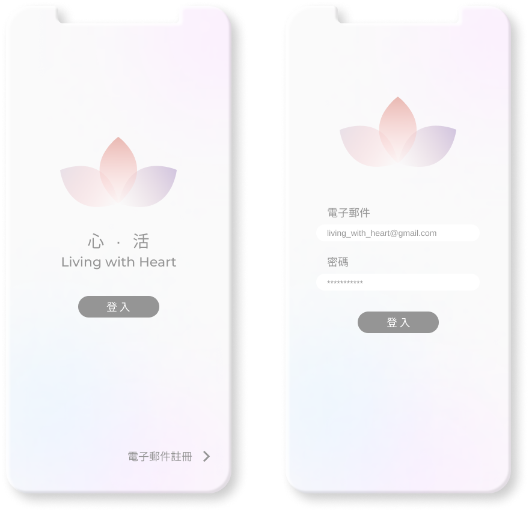

INTRODUCTION
'Living with Heart' is a online and community-based mindfulness and compassion program for the promotion of public mental health in Hong Kong.
With mental health problems constituting major disease burden, mental health promotion in the community has important public impact. This project aims to develop an internet-based platform that enables community individuals to access mental health information and to enhance well-being through mindfulness and compassion training at their convenience.
With mental health problems constituting major disease burden, mental health promotion in the community has important public impact. This project aims to develop an internet-based platform that enables community individuals to access mental health information and to enhance well-being through mindfulness and compassion training at their convenience.

ORIGINAL DESIGN
The program, designed by professions from CUHK, starts with a meaningful objective but haven't; been updated for few years. It would be more attractive if the tone and design presented in harmony.
DESIGN PROCESS
Start with redesigning the wireframe.

COLOR TONE
A soothing color helps calm your mind. I choose a soft and neutral shade for a calming effect.
PROGRAM
4 weeks program chart, perfect for keeping track of the progression of your lessons. Downloading the sound track for offline reviewing.

EMOTION TRACKER
Our wellbeing relies on us understanding our emotions and associated experiences. Keeping a record of your emotions allows you to compare your internal thoughts and initial reactions to similar kinds of events.
RELAXING MUSIC AND SOUND
Many people with mentel health issue suffering from Insomnia. Music and sound is a powerful art form that offers a simple way to improve sleep hygiene, improving your ability to fall asleep quickly and feel more rested. Several studies suggest that music enhances sleep because of its effects on the regulation of hormones, including the stress hormone cortisol.